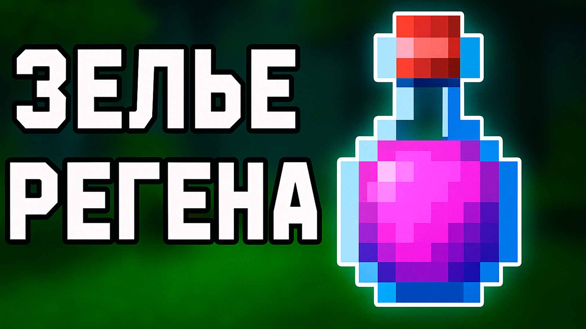
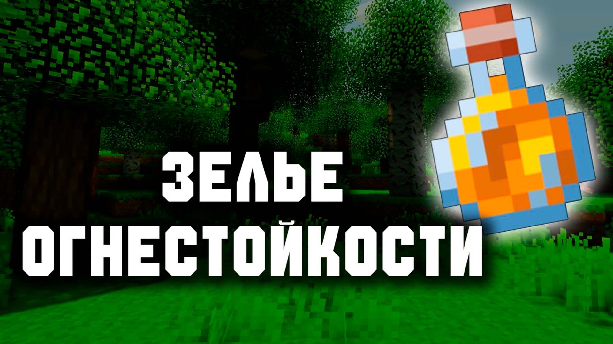
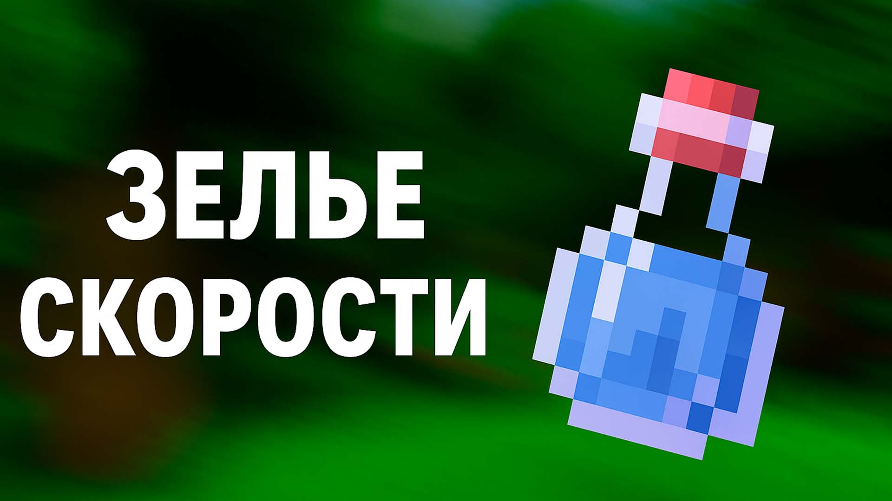

Зелья в Minecraft

Зелье лечения
Мгновенно восстанавливает 4 сердца здоровья.
Рецепт
- Неловкое зелье (Awkward Potion)
- Сверкающий ломтик арбуза (Glistering Melon Slice)
Крафтится на варочной стойке.

Зелье огнестойкости
Даёт иммунитет к огню и лаве на 3 минуты (или 8 минут с усилением).
Рецепт
- Неловкое зелье
- Магмовый крем (Magma Cream)
Можно усилить красным камнем для увеличения длительности.

Зелье скорости
Увеличивает скорость передвижения и длину прыжка на 20% на 3 минуты (или 8 минут с усилением).
Рецепт
- Неловкое зелье
- Сахар (Sugar)
Усиление красным камнем увеличивает длительность, но не силу эффекта.

Зелье сопротивления
Уменьшает получаемый урон примерно на 20% (до 60% при максимальном уровне) на 3 минуты (или 8 минут с усилением).
Рецепт
- Неловкое зелье
- Незеритовый слиток (Netherite Ingot)
В ванильном Minecraft такого рецепта нет — это условный вариант для сайта.

Зелье ночного видения
Позволяет видеть в темноте как при уровне освещения 15 на 3 минуты (или 8 минут с усилением).
Рецепт
- Неловкое зелье
- Золотая морковь (Golden Carrot)
Это реальный рецепт из Minecraft.